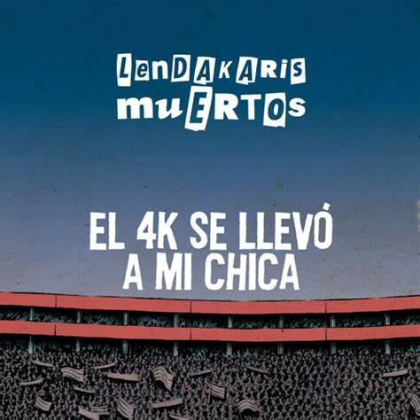

| Extremoduro Clases de guitarra eléctrica |
Cancion que vamos a aprender: | |
| Eskorbuto A karaoke |
 |
Sesion de karaoke |
| Tensö Haremos un concierto |
 |
Concierto |
| Akelarre Punc Charla |
Charla feminista y lgbti |